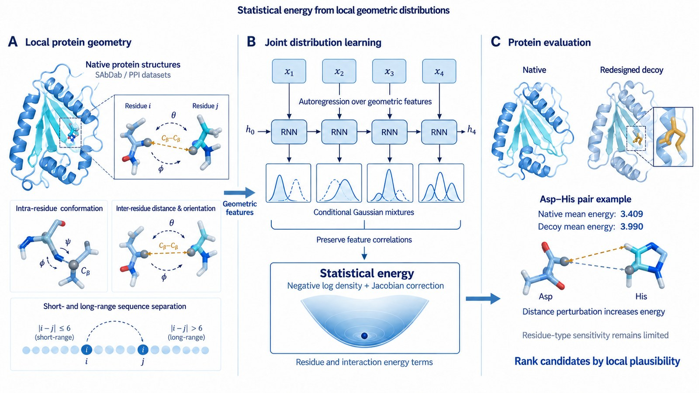
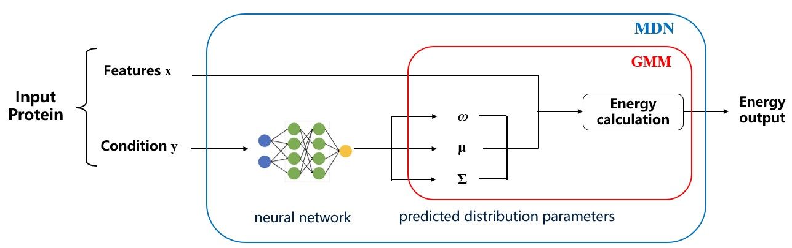

Statistical Energy
Statistical energy functions for design evaluation
A Mixture Density Network that predicts statistical energy functions, used to evaluate and screen de novo protein designs.

Why a statistical energy
Deep generative models for proteins optimize global fold distributions, and in doing so they frequently produce local geometric distortions — unrealistic bond angles, steric clashes — that sit squarely out of distribution. Physical force fields can catch these, but they rest on heavily empirical parameters and simplify the coupling between geometric features. We are building a third option: a statistical energy model that depends on neither generative priors nor classical force fields, learning instead the joint probability distributions of local geometric feature sets directly from experimental structures. The result is a scoring function that can pull valid AI-generated designs out of a decoy set.

Feature sets and energy terms
Two forces shape the design. The curse of dimensionality wants each energy term to involve as few features as possible; accuracy wants strongly correlated features kept together. We balance them at the residue level: the internal conformation of a single amino acid forms one feature set, and spatially adjacent residue pairs form another. Each energy is then the negative log of a learned density, corrected by a Jacobian that accounts for the transformation from Cartesian coordinates — for pair features the determinant carries a factor rαsin θasin θb, where the theoretical α = 2 becomes a trainable parameter because residue sampling in structural databases is far from uniform.
Adjacent pairs are further split by sequence separation (≤6 vs >6), since nearby residues share backbone constraints that distant contacts do not.
Learning architecture
Gaussian Mixture Models approximate the marginal densities, and Mixture Density Networks learn the conditional ones. The pair distributions, however, proved too high-dimensional for a plain MLP — the data became too sparse to learn from. My response was to make the density network autoregressive, replacing the MLP with an RNN that decomposes the joint distribution into a chain of conditionals. This preserves the couplings between geometric features while keeping the model tractable. A variance-gated multi-network ensemble is under development to penalize unreliable predictions and gain robustness on out-of-distribution inputs.
Does it discriminate?
Two benchmarks. Perturbation analysis: shuffling the Φ/Ψ dihedral angles along the sequence leaves marginal-only models unmoved, while our model registers the broken joint geometry — perturbing Cβ distances raises the energy decisively (P(ΔE<0) = 0.884), whereas perturbing amino-acid types alone barely moves it (0.611), honestly marking residue-type distributions as not yet captured. Native vs decoy discrimination: on Asp–His contacts regenerated by ABACUS-Ab, native structures score lower energy (mean 3.41) than redesigned decoys (mean 3.99) — the model separates real from generated at the residue-pair level.
Role
Co-lead. I own the computational implementation: the RNN autoregressive density model, the decoy-generation pipeline (SAbDab/PPI curation, ProteinMPNN and ABACUS-Ab redesign, AlphaFold 3 realization, Jacobian integration), and the Z-score evaluation framework.